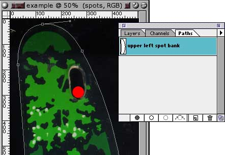
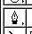

Draw the outline of the plastic using a Path (the gray outline shown here.)
 In addition to simple drawing, the Path tool has several other options you can access by clicking and holding on this icon in the tools palette:
Entire article and photographs copyright © 1998 Dan Wilga. All rights reserved. May not be reprinted without permission.